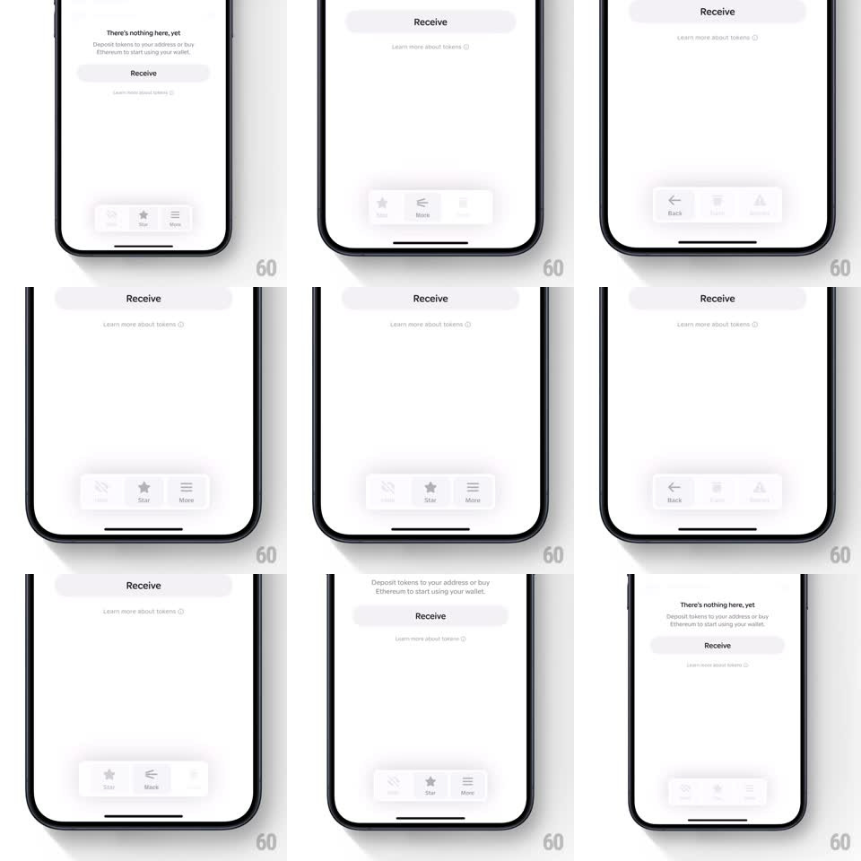

Media
Frame-by-frame

Rebuild this interaction 1:1: Family's floating tab bar morph - tapping "More" on the floating 3-item pill tab bar (Wallet / Star / More) swaps its contents to a Back-leading set (Back plus alternate actions), each icon-label pair crossfading with a springy nudge; tapping Back morphs it back to the default set.

Rebuild this interaction 1:1: Family's floating tab bar morph - tapping "More" on the floating 3-item pill tab bar (Wallet / Star / More) swaps its contents to a Back-leading set (Back plus alternate actions), each icon-label pair crossfading with a springy nudge; tapping Back morphs it back to the default set.
## Integration
Integration: stack-agnostic spec - springs given as stiffness/damping, timed motions as duration + curve; map every value to your framework and animation library of choice.
## Scene
Light wallet screen ("There's nothing here, yet" empty state or "Receive" page) with a floating rounded pill tab bar at the bottom holding three icon+label items. Two bar states: default (Wallet, Star, More) and detail (Back, ..., alternate action).
## Motion spec
Pattern: in-place tab-bar content morph.
- Tap More: the bar's items crossfade - each icon shrinks slightly and fades (120ms) while its replacement scales up from 0.8 (spring ~460/26, 220ms) and fades in; the label text swaps with a 60ms lag behind its icon.
- The swaps ripple left to right across the bar (40ms between items).
- The bar's container never moves or resizes - only its contents morph.
- Tap Back: the reverse morph plays (default set ripples back in, same timing).
- The bar floats above content with a soft shadow throughout - no background dim.
## Calibration
- The morph is a crossfade with scale, not a slide - items change where they stand.
- Ripple stagger is tight (40ms) - one gesture, not three separate pops.
## Reduced motion
Items crossfade without scale or ripple (150ms).
## Don't miss
- Back always lands in the left slot - the return affordance stays in a consistent position.
- Icon and label swap together per item; a mismatched pair (new icon, old label) is the tell of a wrong implementation.